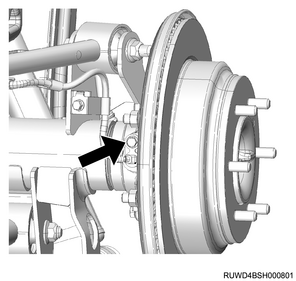

Rear axle assembly removal (All models)
1. Rear axle preparation
1. Raise vehicle using the jack.
Note
- Place the chassis stand on the frame near the rearmost cross member.
Caution
- Be careful not to stretch out the brake flexible hose or the parking brake cable.
- Set up the jack in the specified position.
2. Hold the rear axle using the jack.
2. Disc wheel removal
1. Remove the disc wheel from vehicle.
3. Rear axle differential oil drain
1. Drain the rear axle differential oil from the rear axle case.
4. Rear propeller shaft assembly preparation
Note
- The rear propeller shaft assembly is adjusted to have a precise balance, so before removing and disassembling, always place an alignment mark for each of the joints.
- Put the alignment marks on the flanges on both the front and rear sides of the rear propeller shaft.

5. Center bearing assembly removal
Note
- The following is the 2WD model.
1. Remove the center bearing assembly from the frame.
Note
- Remove the center bearing fixing bolt.
6. Rear propeller shaft assembly removal
1. Remove the rear propeller shaft assembly from vehicle.
Note
- Remove the bolt, the nut, and the washer on the rear axle side.
- Plug the hole at the rear end of the transmission to prevent oil leakage.
7. Brake hose disconnect
1. Disconnect the brake hose from the brake caliper assembly.
Note
- Remove the brake hose from the caliper by taking off the bolt and gasket.
Caution
- After removing the brake hose, cover the opening with a plug or tape to prevent foreign material from entering.
8. Brake caliper assembly removal
1. Remove the lock bolt from the brake caliper assembly.
2. Remove the brake caliper assembly from the brake support.
9. Disc brake pad removal
1. Remove the disc brake pad from the brake support.
Note
- Make alignment marks at the position of the pad for use as a reference when installing.
2. Remove the clip from the brake support.
Note
- Remove the pad clip.
10. Brake support removal
1. Remove the guide pin from the brake support.
2. Remove the boot from the guide pin.
3. Remove the brake support from the rear axle.
Caution
- When removing the brake support, take care not to damage the brake hose.

11. Rear rotor removal
1. Remove the rear rotor from the axle shaft.
12. Rear wheel speed sensor safety information
Note
- If the wheel speed sensor is damaged in the course of the maintenance works, that may cause the following symptoms.
- ABS abnormalities due to sensor damage
- In case of ABS failure or ABS malfunction due to improper sensor installation, installation/removal of the wheel speed sensor, or replacement of the wheel speed sensor, follow the precautions indicated in the procedure for the work.
13. Rear wheel speed sensor disconnect
1. Disconnect the harness connector from the wheel speed sensor.
14. Rear wheel speed sensor removal
1. Disconnect the harness clip from the harness.
Note
- Remove the harness fixing bolt.
- Disconnect the harness fixing clip.
2. Remove the wheel speed sensor from the rear axle case.
Note
- Remove the sensor-fixing bolt and wheel speed sensor.
Caution
- When the wheel speed sensor body does not come off easily due to the rust on the knuckle or support, use a rust penetrant, etc., and carefully remove the sensor body by shifting it little by little.
- Be careful not to bump or step on the removed sensor.
- Never perform following works.
- Remove the sensor body by hammering.
- Insert a flat-head screwdriver or the like into the gap to remove it forcibly.
- When removing the wheel speed sensor, do not pull the harness.

15. Brake shoe assembly removal
1. Remove the shoe holding cup from the brake shoe pin.
2. Remove the shoe holding spring from the brake shoe pin.
3. Remove the return spring from the brake shoe assembly.
4. Remove the adjuster spring from the adjuster.
5. Disconnect the parking brake cable from the lever.
6. Remove the strut from the lever.
7. Remove the brake shoe assembly from the support plate.
8. Remove the lever from the brake shoe assembly.
16. Parking brake cable removal
1. Remove the parking brake cable from the back plate.
Note
- Remove the nut that fastens the parking brake cable to the back plate.
Caution
- Do not twist or bend the cable.
- Be careful for damage to the cable, which will cause insufficient operation.

2. Remove the parking brake cable bracket from the lower link.
Note
- Remove the nut that fastens the cable.
3. Remove the parking brake cable from the frame.
17. Lower link removal
1. Disconnect the parking brake cable bracket from the lower link.
2. Disconnect the lower link from the rear axle.
3. Remove the lower link from the frame.
- Lower link
18. Upper link removal
1. Disconnect the harness from the upper link.
2. Disconnect the upper link from the rear axle.
3. Remove the upper link from the frame.
- Upper link
19. Stabilizer bar removal
1. Disconnect the stabilizer link from the frame.
2. Remove the stabilizer link from the stabilizer bar.
- Stabilizer link
- Nut, stabilizer link - frame
3. Remove the stabilizer bar from the rear axle.
Note
- Remove the clamp, and then remove the stabilizer bar from the rear axle.
4. Remove the bushing from the stabilizer bar.
20. Lateral rod removal
1. Disconnect the lateral rod from the frame.
2. Remove the lateral rod from the rear axle.

- Lateral rod
21. Coil spring removal
1. Disconnect the brake hose from the rear axle.
2. Disconnect the shock absorber from the frame.
3. Lower the rear axle.
4. Remove the coil spring from the rear axle.
5. Remove the coil spring insulator from the frame.
22. Rear axle assembly removal
1. Remove the rear axle assembly from vehicle.
Caution
- When pulling out the rear axle assembly, be very careful not to deform or damage the brake pipe, brake hose or back plate.
Note
- Remove the shock absorber from the rear axle assembly.